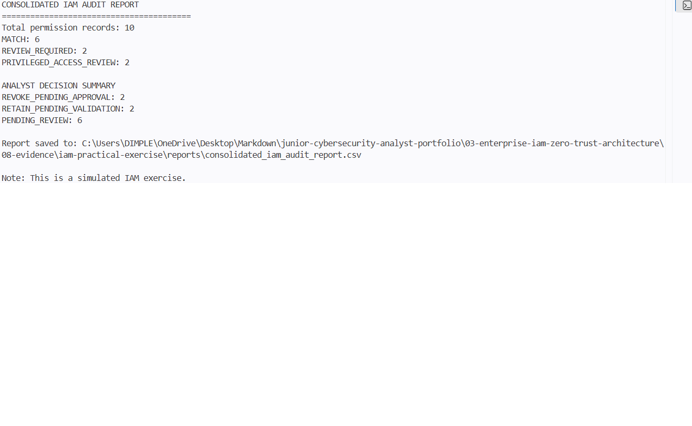
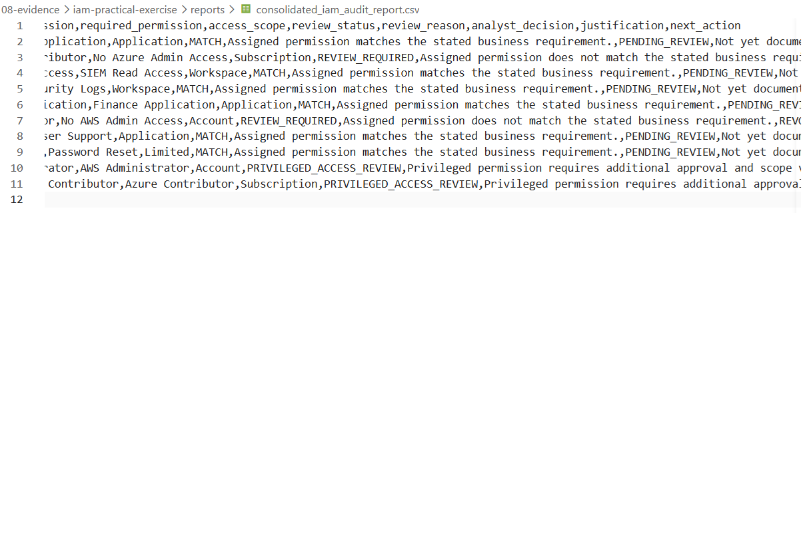

Business Scenario
NorthStar Technologies is a fictional organization with approximately 200 employees, office-based and remote users, and workloads across AWS and Microsoft Azure.
A security architecture design case study for a fictional 200-employee organization, supported by a practical, Python-based simulated IAM access review exercise. The project explores identity governance, least privilege, privileged access management, Zero Trust principles, and cloud security controls.
This project examines how an organization can strengthen identity and access management across cloud and business environments. It proposes a centralized identity model, role-based access controls, privileged access procedures, and continuous verification principles.
NorthStar Technologies is a fictional organization with approximately 200 employees, office-based and remote users, and workloads across AWS and Microsoft Azure.
A local Python exercise was developed using fictional employee permission records. The script compares assigned permissions with stated role requirements, identifies potential access mismatches, flags privileged permissions, and generates consolidated audit reports.
Screenshots from the local Python IAM access review exercise demonstrate the analysis output and consolidated audit reporting.
Execution output showing permission analysis, review classifications, and analyst decision counts.

Generated audit records showing review status, analyst decisions, justifications, and next actions.
